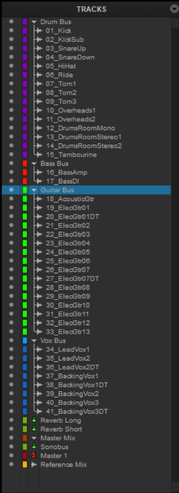
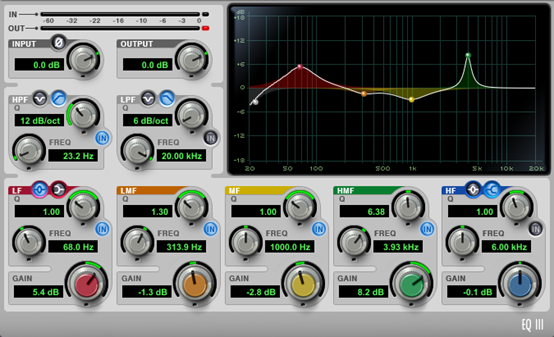
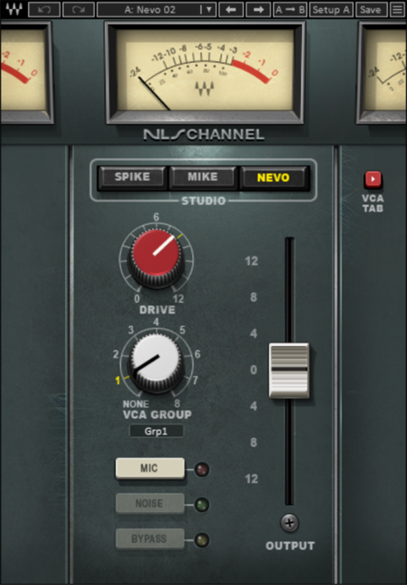
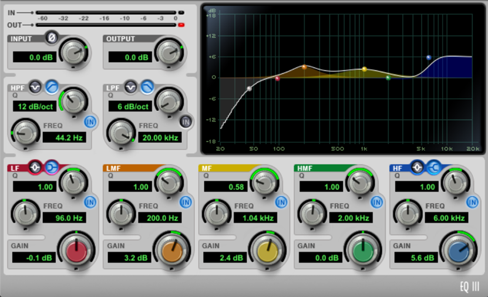
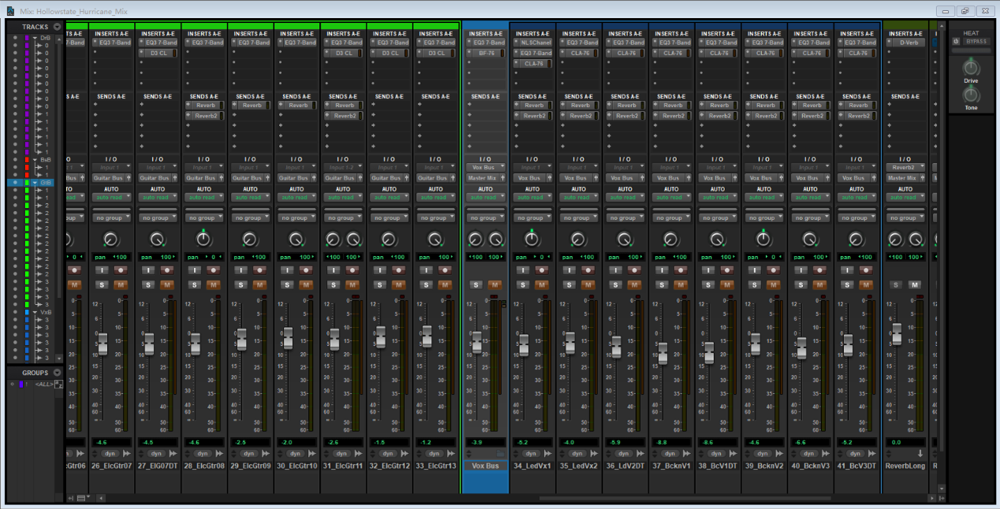

Tags: Mixing, Hard Rock, Hollowstate
This mixing project features the tracks of the song Hurricane by Hollowstate, provided by Cambridge Music Technology. The songs published by the band resonated with my musical taste. As both a devoted hard rock fan and a guitarist in my own band, I felt compelled to take on the challenge of mixing one of their tracks. The original song, consisted of 41 tracks, posed a formidable task as mixing engineers have to balance all aspects, including volume and stereo image, for each track to ensure that they fit seamlessly.
Figure 1. List of Tracks

At first glance, the kick punch is too weak and has excessive biting. I first added a +8.2 dB boost for the mid-high frequency band at 3.93 kHz with a high Q value to bring out the punch, addressing its lack of midrange energy. The mid frequency and low-mid frequency bands at 10.0 kHz and 313.9 Hz, respectively, are both given a negative gain to reduce biting and remove boxiness, while the low-frequency band at 68.0 Hz with a +5.4 dB gain and a Q of 1.0 boosts the sub-bass to sound thump. High-pass is used to clean up ultra-low rumble. I used CLA-76 to compress the kick around -5 to -3 dB gain with a fast attack. Because CLA-76 is an optical compressor, the way it works make the compress sounds smoother and more natural.
Figure 2. Track 01_Kick EQ

The same applies for the track KickSub, except that it does not need a punch since the main kick track will do the job, so I used a high shelf to leave room and emphasize the kick’s punch.
For SnareUp, I boosted its mid frequency band from 216.5 Hz to 978.8 Hz to make it sound thicker and compensate for the reduce of the midrange frequency of the kick. SnareDown captures the high frequency of the snare, but I thought it lacked energy so I applied a 2.3 dB gain at 6.00 kHz. I reduced unwanted low frequencies using high pass and -4.6 dB gain at 248.8 Hz with a low Q value of 0.56. Both of them are compressed using Dyn 3 Compressor.
The other tracks, such as the overheads, don’t have major issues, so I only made minor EQ adjustments and focused on overall balance, including volume and panning.
The original stereo image of the song was limited because all the guitar tracks are panned to the center. To solve this issue, for the double tracked guitars, I hard panned 100% to the left and right while for others, I compared different ways of panning to find a panning that would best enhance the stereo image.
The main riff is placed at the center while most rhythm guitars are panned either to the left or to the right, which produces a desirable “wall of sound” effect.
Although the original tracks had reverb to some extent, I still applied two reverbs–one short reverb and one long reverb–on important tracks, such as guitar solo, to enhance their depth and presence in the mix, as well as matching the hard rock genre of the song. The short reverb adds subtle ambience and glues the tracks together by tightening the sound while the long reverb creates a grandeur quality. By controlling the dry-wet ratio, I find a balance where the reverbs are optimal.
For the amp track, I mainly emphasized its distortion and high-end frequency, so a high pass is used to limit the low frequency band. On the other hand, I preserved most of the DI-amp’s quality by making minor adjustments. Since there are only 2 tracks for the bass, my main methodology when mixing was to play both tracks simultaneously to observe the optimal balance between the tracks so that they create solid sounds.
After balancing the instruments, I worked with the vocals. Since Hurricane is a rock song, I panned the lead vocal in the center while the doubled tracked chorus is panned to the left or to the right.
Figure 3. Track 34_LeadVox1 NLS Channel 2 Configuration

For the lead EQ, I referenced to the original mix by Hollowstate and observed the vocal’s strong presence and brightness, so I added a NLS channel and a high shelf to elevate the energy from the high frequency band as well as a bell around 1 kHz. The use of EQ is used in pair with CLA-76 compressor as vocals are more delicate and require smoother compression.
Figure 4. Track 34_LeadVox1 EQ

Figure 5. Project Overview
